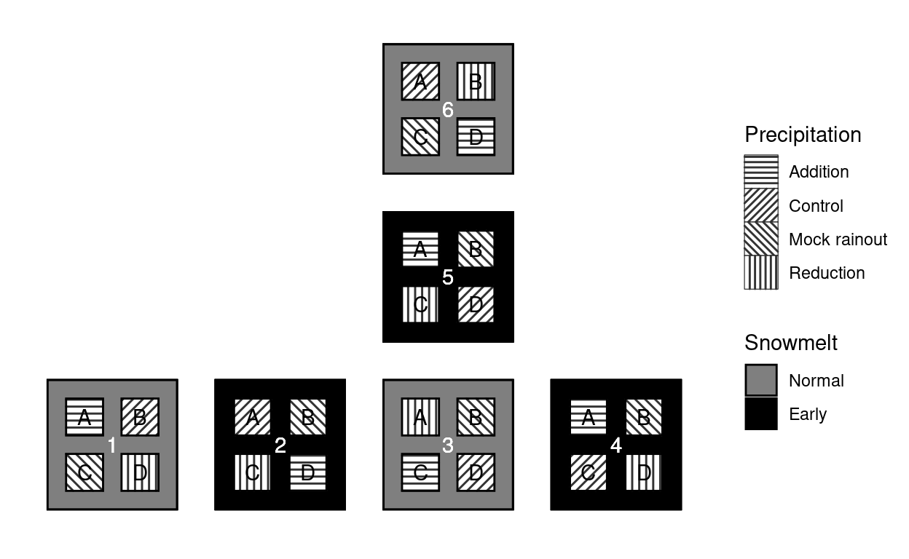
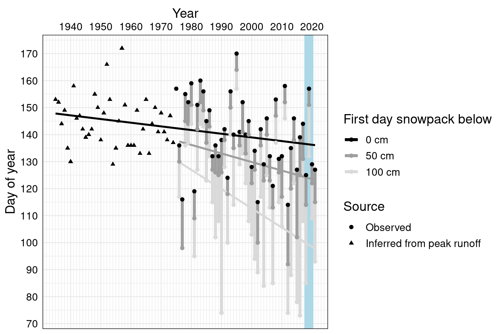
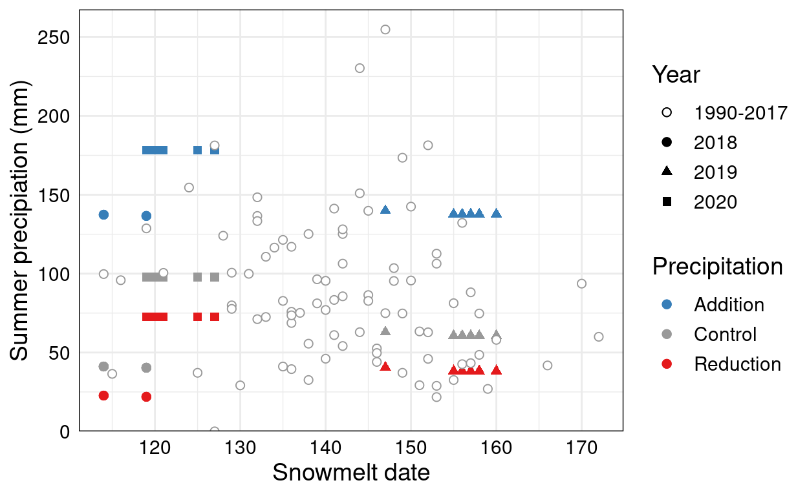
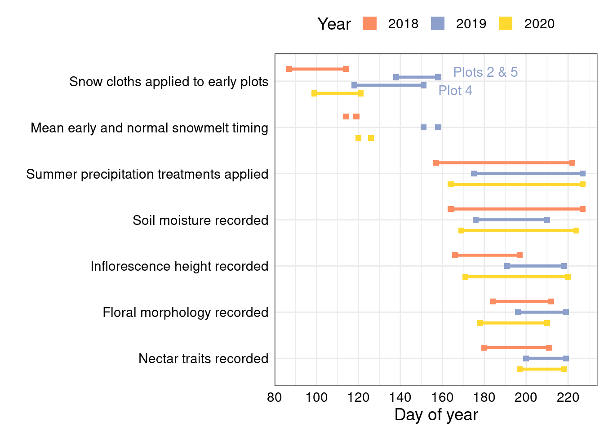
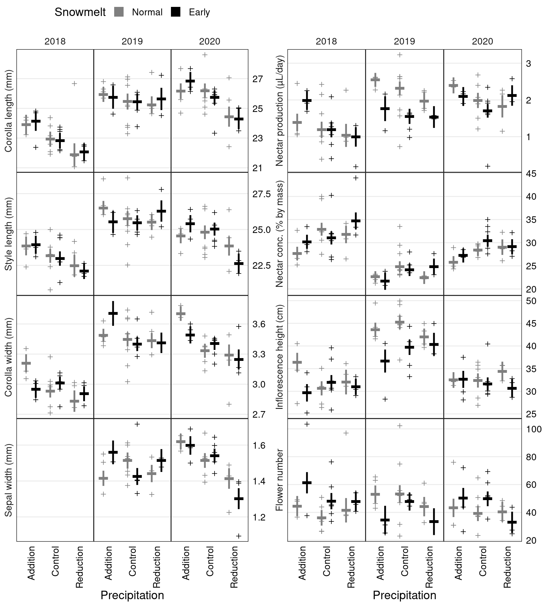
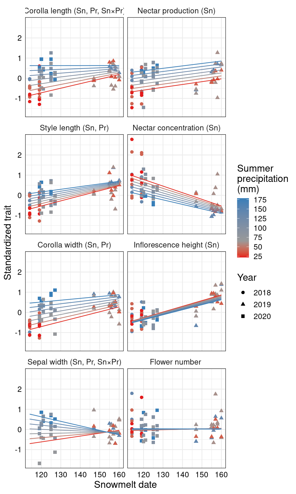
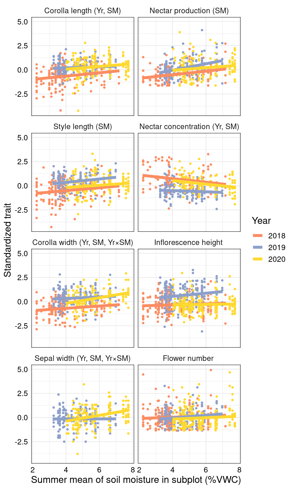
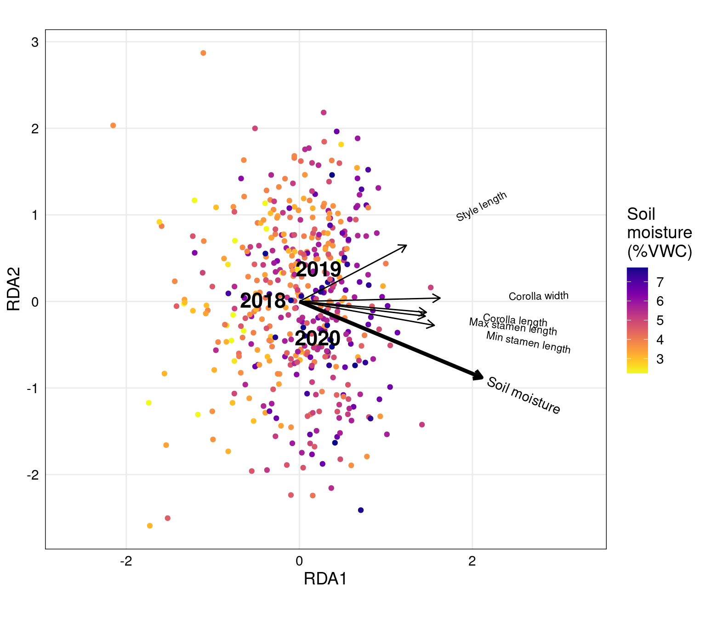

Code for “Earlier snowmelt and reduced summer precipitation alter floral traits important to pollination”
John M. Powers, Heather M. Briggs, Rachel G. Dickson, Xinyu Li, Diane R. Campbell
2021-09-20
Treatments
library(tidyverse)
library(lubridate)
library(lme4)
library(lmerTest)
library(MuMIn)
library(glmmTMB)
library(emmeans)
library(broom)
library(broom.mixed)
library(vegan)
library(RColorBrewer)
library(viridis)
library(gridExtra)
library(GGally)
library(ggvegan)
library(ggfortify)
library(ggnewscale)
library(ggpattern)
library(knitr)
knitr::opts_chunk$set(comment="", cache=T, warning = F, message = F, fig.path = "images_cut/")
options(digits=4) # for kables
load("data/maxfield_data.rda")
options(contrasts = c("contr.sum", "contr.poly")) #needed for Type III SS
anova_table <- function(df, mod) { #for lmer models and lmerTest::anova
df %>% select(trait, term, p.value) %>%
pivot_wider(names_from=term, values_from=p.value) %>%
mutate(R2m = map_dbl(mod, ~ MuMIn::r.squaredGLMM(.x)[[1,"R2m"]]),
singular = map_lgl(mod, isSingular))
}
Anova_table <- function(df) { #for glmmTMB models and car::Anova
df %>% select(Trait=trait, term, p.value) %>%
pivot_wider(names_from=term, values_from=p.value,names_repair="unique")
}
re_table <- function(coefs) {
coefs %>% filter(effect=="ran_pars") %>% select(trait, group, estimate) %>% pivot_wider(names_from=group, values_from=estimate)
}
select <- dplyr::select
snow_pal_grey <- c("grey50","black")size_meter <- 0.11
subplot_offset <- size_meter * 1.5
ggplot(treatments_map %>% mutate(snow=fct_relevel(snow, "Normal"))) + coord_fixed(clip="off")+
geom_tile(aes(x=plot_x, y=plot_y, fill=snow),
width=7*size_meter, height=7*size_meter, color="black", size=0.5) +
scale_fill_manual("Snowmelt", values=snow_pal_grey)+
geom_tile_pattern(aes(x=plot_x+subplot_x*subplot_offset, y=plot_y+subplot_y*subplot_offset, pattern_angle=water4),
fill="white", pattern_fill="black", pattern_density=0.01, pattern_spacing=0.01,
height=2*size_meter, width=2*size_meter, color="black", size=0.5) +
scale_pattern_angle_manual("Precipitation", values=c(0,45,135,90))+
geom_text(aes(x=plot_x+subplot_x*subplot_offset, y=plot_y+subplot_y*subplot_offset, label=subplot), color="black") +
geom_text(aes(x=plot_x, y=plot_y, label=plot), color="white")+ theme_minimal() +
theme(legend.position="right", axis.title=element_blank(), axis.text = element_blank(),
axis.ticks = element_blank(), panel.background = element_blank(), panel.grid = element_blank())
Snowmelt timing
groundcover %>% mutate(first_snow_day=first_snow_day-365) %>% select(-first_snow_day) %>%
pivot_longer(ends_with("day"), names_to="threshold", values_to="day") %>% drop_na(day) %>% select(-starts_with("first")) %>%
mutate(threshold = fct_reorder(factor(threshold),day, na.rm=T, .desc=T)) %>%
ggplot(aes(x=year, y=day, color=threshold)) +
annotate("rect", xmin=2017.5, xmax=2020.5, ymin=-Inf, ymax=Inf, fill="lightblue")+
geom_line(aes(group=year), size=1.5)+ geom_smooth(method="lm", se=F) +
geom_point(aes(shape=source)) + scale_shape_manual("Source",values=c(19,17), labels=c("Observed", "Inferred from peak runoff")) +
scale_x_continuous(breaks=seq(1940,2020, by=10), minor_breaks = scales::pretty_breaks(n = 100), position = "top") + scale_y_continuous(n.breaks=10)+
scale_color_grey(labels=c(paste(c(0,50,100),"cm")), start=0, end=0.85) +
labs(x="Year", y="Day of year", color="First day snowpack below") + theme_minimal() + theme(text=element_text(color="black", size=14), axis.text = element_text(color="black"), panel.border = element_rect(fill=NA, colour = "black"))
meltdate.mod <- lm(first_0_cm_day ~ year, data=groundcover)
summary(meltdate.mod)
Call:
lm(formula = first_0_cm_day ~ year, data = groundcover)
Residuals:
Min 1Q Median 3Q Max
-26.090 -8.017 0.051 7.499 30.360
Coefficients:
Estimate Std. Error t value Pr(>|t|)
(Intercept) 411.2126 97.0568 4.24 5.7e-05 ***
year -0.1361 0.0491 -2.77 0.0068 **
---
Signif. codes: 0 '***' 0.001 '**' 0.01 '*' 0.05 '.' 0.1 ' ' 1
Residual standard error: 11.5 on 85 degrees of freedom
Multiple R-squared: 0.083, Adjusted R-squared: 0.0723
F-statistic: 7.7 on 1 and 85 DF, p-value: 0.0068early.melt_offset <- treatments %>% filter(snow=="Early") %>% pull(melt_offset)
cat("SD of first bare ground =", round(sd(groundcover$first_0_cm_day),1),"days over",range(groundcover$year))SD of first bare ground = 11.9 days over 1935 2021cat("Snowmelt is advancing",-10*tidy(meltdate.mod)$estimate[2],"+-",10*tidy(meltdate.mod)$std.error[2], "days per decade")Snowmelt is advancing 1.361 +- 0.4906 days per decadecat("Early snow treatments melted", -round(mean(early.melt_offset),1), "+-", round(sd(early.melt_offset),1), "days earlier (mean +- SD)")Early snow treatments melted 5.7 +- 2.2 days earlier (mean +- SD)cat("Equivalent to", mean(early.melt_offset)/tidy(meltdate.mod)$estimate[2], "+-", (mean(early.melt_offset)/tidy(meltdate.mod)$estimate[2])*sqrt((sd(early.melt_offset)/mean(early.melt_offset))^2 + (tidy(meltdate.mod)$std.error[2]/tidy(meltdate.mod)$estimate[2])^2), "years of future warming")#propagate error from SD of treatment advance and SE of regressionEquivalent to 41.78 +- 22.12 years of future warmingtreatments %>% ggplot(aes(x=sun_date, shape=year, color=water, y=precip_est_mm))+geom_point(size=2)+
geom_point(data=groundcover, aes(x=first_0_cm_day, color="Control", shape="1990-2017"), fill="white", size=2) +
scale_color_manual(values=water_pal) + scale_shape_manual(values=c(21, 19, 17, 15))+
scale_y_continuous(limits=c(0,NA), expand=expansion(mult = c(0,0.05)))+
labs(y="Summer precipiation (mm)", x="Snowmelt date", color="Precipitation", shape="Year") +
theme_minimal() + theme(text=element_text(color="black", size=14), axis.text = element_text(color="black"),
panel.border = element_rect(fill=NA, colour = "black"))
Soil moisture
# VWC split-plot analysis on subplot means (for the whole measurement period)
sm.mod <- lmer(VWC ~ year * snow * water + (1|snow:plot)+ (1|snow:plotid), data=sm.subplotyear)
anova(sm.mod) %>% kable()| Sum Sq | Mean Sq | NumDF | DenDF | F value | Pr(>F) | |
|---|---|---|---|---|---|---|
| year | 21.0823 | 10.5411 | 2 | 34.783 | 50.4914 | 0.0000 |
| snow | 1.1642 | 1.1642 | 1 | 5.046 | 5.5765 | 0.0642 |
| water | 51.0709 | 25.5354 | 2 | 15.012 | 122.3132 | 0.0000 |
| year:snow | 2.3509 | 1.1754 | 2 | 34.782 | 5.6303 | 0.0076 |
| year:water | 4.4296 | 1.1074 | 4 | 36.320 | 5.3044 | 0.0018 |
| snow:water | 0.5762 | 0.2881 | 2 | 15.013 | 1.3800 | 0.2817 |
| year:snow:water | 0.3480 | 0.0870 | 4 | 36.320 | 0.4168 | 0.7954 |
(sm.emm.snow <- summary(emmeans(sm.mod, ~ snow))) %>% kable()| snow | emmean | SE | df | lower.CL | upper.CL |
|---|---|---|---|---|---|
| Early | 4.503 | 0.1984 | 4.938 | 3.991 | 5.015 |
| Normal | 5.128 | 0.1763 | 5.189 | 4.679 | 5.576 |
sm.emm.snow$emmean[1] - sm.emm.snow$emmean[2][1] -0.6244(sm.emm.water <- summary(emmeans(sm.mod, ~ water))) %>% kable()| water | emmean | SE | df | lower.CL | upper.CL |
|---|---|---|---|---|---|
| Addition | 6.184 | 0.1638 | 10.618 | 5.821 | 6.546 |
| Control | 4.389 | 0.1430 | 6.717 | 4.048 | 4.730 |
| Reduction | 3.873 | 0.1638 | 10.618 | 3.511 | 4.236 |
sm.emm.water$emmean[1] - sm.emm.water$emmean[2][1] 1.795sm.emm.water$emmean[3] - sm.emm.water$emmean[2][1] -0.5155Timing of measurements
timings_labels <- c(snowcloth="Snow cloths applied to early plots",
meltdates="Mean early and normal snowmelt timing",
waterdates="Summer precipitation treatments applied",
sm="Soil moisture recorded", ph="Inflorescence height recorded",
mt="Floral morphology recorded", nt="Nectar traits recorded",
pt= "Physiology traits recorded", lt="Vegetative traits recorded",
sds="Flower collection period", cen="Rosette size and survival recorded")
plot_timings <- function(data) {
data %>% mutate(variable=fct_reorder(variable, begin, na.rm=T, .desc=T),
drawline = ifelse(variable %in% c("lt","meltdates"), NA, TRUE)) %>%
ggplot(aes(y=variable, color=year))+
geom_linerange(aes(xmin=begin, xmax=end, linetype=drawline),
position = position_dodge2(width=0.7, reverse = T), size=1.2, show.legend=FALSE) +
geom_text(data=data %>% drop_na(plots) %>% filter(year=="2019"),
aes(x = end+7, label=paste(ifelse(nchar(plots)>1, "Plots","Plot"), str_replace(plots,","," & "))),
position = position_dodge2(width=0.8, reverse = T), size=4, hjust=0, show.legend=FALSE)+
geom_point(aes(x=begin), position = position_dodge2(width=0.7, reverse = T), shape=15, size=2)+
geom_point(aes(x=end), position = position_dodge2(width=0.7, reverse = T), shape=15, size=2) +
scale_color_manual("Year", values=year_pal, guide=guide_legend(override.aes = list(size=5))) +
scale_y_discrete("", labels=timings_labels)+
scale_x_continuous("Day of year", breaks=seq(80,240, by=20)) +
theme_minimal() + theme(legend.position = "top", text=element_text(size=14, color="black"), axis.text = element_text(color="black"),
panel.border = element_rect(fill=NA, colour = "black"))
}
plot_timings(filter(timings, !variable %in% c("sds","lt","pt","cen")))
Sample sizes
count_measurements <- function(df, tr) summarize(df, across(all_of(tr), ~ sum(!is.na(.x))))
bind_rows(n_measurements = count_measurements(bind_rows(mnps, lt, pt), alltraits),
plant_year_round = count_measurements(bind_rows(mnps.plantyr, lt.plantyr, pt.plantyr), alltraits),
plant_year = count_measurements(bind_rows(mnps, lt, pt) %>% group_by(year, plantid) %>%
summarize(across(all_of(alltraits), mean, na.rm=T)), alltraits) %>%
ungroup %>% summarize(across(all_of(alltraits), sum)),
plant = count_measurements(bind_rows(mnps, lt, pt) %>% group_by(plantid) %>%
summarize(across(all_of(alltraits), mean, na.rm=T)), alltraits),
.id="sample_size") %>% column_to_rownames("sample_size") %>%
t %>% as.data.frame %>% rownames_to_column("trait") %>% as_tibble %>%
mutate(n_per_plant_year_round = n_measurements / plant_year_round,
n_per_plant_year = n_measurements / plant_year,
n_per_plant = n_measurements/ plant,
plant_per_subplot_per_year = plant_year / 24 / 3) %>% kable(digits=2)| trait | n_measurements | plant_year_round | plant_year | plant | n_per_plant_year_round | n_per_plant_year | n_per_plant | plant_per_subplot_per_year |
|---|---|---|---|---|---|---|---|---|
| corolla_length | 1194 | 494 | 494 | 484 | 2.42 | 2.42 | 2.47 | 6.86 |
| style_length | 1185 | 491 | 491 | 481 | 2.41 | 2.41 | 2.46 | 6.82 |
| corolla_width | 963 | 455 | 455 | 448 | 2.12 | 2.12 | 2.15 | 6.32 |
| sepal_width | 749 | 340 | 340 | 334 | 2.20 | 2.20 | 2.24 | 4.72 |
| nectar_24_h_ul | 744 | 432 | 432 | 419 | 1.72 | 1.72 | 1.78 | 6.00 |
| nectar_conc | 656 | 401 | 401 | 390 | 1.64 | 1.64 | 1.68 | 5.57 |
| nectar_sugar_24_h_mg | 656 | 401 | 401 | 390 | 1.64 | 1.64 | 1.68 | 5.57 |
| height_cm | 1865 | 674 | 674 | 653 | 2.77 | 2.77 | 2.86 | 9.36 |
| open | 10143 | 818 | 746 | 723 | 12.40 | 13.60 | 14.03 | 10.36 |
| seeds_per_fruit | 528 | 505 | 505 | 491 | 1.05 | 1.05 | 1.08 | 7.01 |
| seeds_est | 528 | 505 | 505 | 491 | 1.05 | 1.05 | 1.08 | 7.01 |
| fruits_nonaborted | 641 | 610 | 610 | 591 | 1.05 | 1.05 | 1.08 | 8.47 |
| flowers_est | 641 | 610 | 610 | 591 | 1.05 | 1.05 | 1.08 | 8.47 |
| prop_infested | 611 | 581 | 581 | 563 | 1.05 | 1.05 | 1.09 | 8.07 |
| prop_aborted | 636 | 606 | 606 | 587 | 1.05 | 1.05 | 1.08 | 8.42 |
| seeds_per_flower | 528 | 505 | 505 | 491 | 1.05 | 1.05 | 1.08 | 7.01 |
| sla | 505 | 496 | 326 | 264 | 1.02 | 1.55 | 1.91 | 4.53 |
| trichome_density | 592 | 583 | 326 | 264 | 1.02 | 1.82 | 2.24 | 4.53 |
| water_content | 505 | 496 | 326 | 264 | 1.02 | 1.55 | 1.91 | 4.53 |
| photosynthesis | 327 | 327 | 319 | 275 | 1.00 | 1.03 | 1.19 | 4.43 |
| conductance | 323 | 323 | 315 | 271 | 1.00 | 1.03 | 1.19 | 4.38 |
| WUE | 327 | 327 | 319 | 275 | 1.00 | 1.03 | 1.19 | 4.43 |
#How many plants flowered twice?
with(cen.status, table(flowering_status_18 + flowering_status_19 + flowering_status_20))
0 1 2
499 548 22 Floral traits
Floral trait correlations
mnps.plantyr %>% select(corolla_length, corolla_width, style_length, anther_max, anther_min, sepal_width, nectar_24_h_ul, nectar_conc, nectar_sugar_24_h_mg, height_cm, flowers_est) %>%
ggcorr(hjust=0.85, layout.exp=2, label=T, label_round=2)
Plasticity models
Plasticity: water and snowmelt treatments
This is a split-plot analysis, based on the original experimental design. The models use:
- mnps.plantyr, the plant means within each year
- snow, the snowmelt treatment (except for plot 2 in 2019)
- water, the water treatments with mock rainouts and controls combined
- plot as a random effect (subplots vary within this larger unit)
- plotid as a random effect (plants vary within this larger unit)
The models are specified as:
lmer(trait ~ year * snow * water + (1|snow:plot) + (1|snow:plotid), data = mnps.plantyr)ANOVA tables
lt.subplot.r2 <- lt.subplotround %>% filter(round=="2")
lt.plantyr.r2 <- lt.plantyr %>% filter(round=="2")
options(contrasts = c("contr.sum", "contr.poly"))
mod.split <- c(map(set_names(traits),
~ lmer(mnps.plantyr[[.x]] ~ year * snow * water + (1|snow:plot) + (1|snow:plotid),
data=mnps.plantyr)),
map(set_names(leaftraits),
~ lmer(lt.plantyr.r2[[.x]] ~ year * snow * water + (1|snow:plot) + (1|snow:plotid),
data=lt.plantyr.r2)),
map(set_names(phystraits),
~ lmer(pt.plantyr[[.x]] ~ year * snow * water + (1|snow:plot) + (1|snow:plotid) + (1|round),
data=pt.plantyr)))
mod.split.coefs <- map_dfr(mod.split, tidy, .id="trait")
mod.split.tests <- map(mod.split, anova, ddf="Ken") %>% map_dfr(tidy, .id="trait")
mod.split.emm <- map_dfr(mod.split, ~ summary(emmeans(ref_grid(.x), ~ year * snow * water)), .id = "trait")
anova_table(mod.split.tests, mod.split) %>% kable()| trait | year | snow | water | year:snow | year:water | snow:water | year:snow:water | R2m | singular |
|---|---|---|---|---|---|---|---|---|---|
| corolla_length | 0.0000 | 0.8946 | 0.0025 | 0.9912 | 0.1473 | 0.7345 | 0.8934 | 0.2280 | TRUE |
| style_length | 0.0000 | 0.7633 | 0.0196 | 0.9797 | 0.1015 | 0.9313 | 0.2752 | 0.1847 | TRUE |
| corolla_width | 0.0000 | 0.7192 | 0.0015 | 0.5251 | 0.6266 | 0.4335 | 0.0614 | 0.3032 | TRUE |
| sepal_width | 0.4991 | 0.9299 | 0.0090 | 0.1803 | 0.0031 | 0.3125 | 0.0221 | 0.1140 | TRUE |
| nectar_24_h_ul | 0.0000 | 0.2087 | 0.0354 | 0.0086 | 0.7041 | 0.6346 | 0.4633 | 0.1675 | TRUE |
| nectar_conc | 0.0000 | 0.5226 | 0.0077 | 0.7581 | 0.6610 | 0.4919 | 0.1730 | 0.3083 | FALSE |
| nectar_sugar_24_h_mg | 0.0000 | 0.3494 | 0.4022 | 0.0281 | 0.3964 | 0.5010 | 0.1339 | 0.1247 | TRUE |
| height_cm | 0.0000 | 0.0797 | 0.9885 | 0.2403 | 0.4519 | 0.4824 | 0.0828 | 0.2340 | FALSE |
| open | 0.0000 | 0.8278 | 0.6950 | 0.1774 | 0.6485 | 0.3676 | 0.1002 | 0.2548 | FALSE |
| seeds_per_fruit | 0.0000 | 0.4424 | 0.8260 | 0.5306 | 0.0794 | 0.1100 | 0.2187 | 0.0988 | TRUE |
| seeds_est | 0.0000 | 0.7326 | 0.6288 | 0.0008 | 0.1485 | 0.3871 | 0.4210 | 0.1230 | TRUE |
| fruits_nonaborted | 0.0102 | 0.8512 | 0.3709 | 0.0065 | 0.3237 | 0.7150 | 0.4067 | 0.0690 | TRUE |
| flowers_est | 0.4994 | 0.8003 | 0.3648 | 0.0094 | 0.2555 | 0.6195 | 0.7134 | 0.0421 | TRUE |
| prop_infested | 0.0000 | 0.2164 | 0.3807 | 0.0511 | 0.8629 | 0.1787 | 0.6333 | 0.0630 | TRUE |
| prop_aborted | 0.0000 | 0.5015 | 0.6996 | 0.2176 | 0.5749 | 0.1385 | 0.4115 | 0.0678 | TRUE |
| seeds_per_flower | 0.0000 | 0.2196 | 0.6187 | 0.1178 | 0.1651 | 0.0583 | 0.7937 | 0.1098 | TRUE |
| sla | 0.0000 | 0.1519 | 0.6661 | 0.0120 | 0.7884 | 0.2773 | 0.1535 | 0.6027 | FALSE |
| trichome_density | 0.0000 | 0.4894 | 0.5712 | 0.5986 | 0.1153 | 0.9208 | 0.5156 | 0.2094 | FALSE |
| water_content | 0.1868 | 0.6817 | 0.0037 | 0.0756 | 0.0068 | 0.3675 | 0.4283 | 0.2171 | FALSE |
| photosynthesis | 0.0620 | 0.6319 | 0.3075 | 0.4575 | 0.4112 | 0.9876 | 0.9137 | 0.1086 | TRUE |
| conductance | 0.0009 | 0.4670 | 0.0023 | 0.4766 | 0.0024 | 0.6613 | 0.6894 | 0.3456 | TRUE |
| WUE | 0.0000 | 0.2108 | 0.0002 | 0.4673 | 0.0026 | 0.3262 | 0.8511 | 0.4422 | TRUE |
Plots
plot_split_plot <- function(emm, data, traits.plot, geom = "point", plot.emm = TRUE, facets="year") {
data.long <- data %>% select(c(all_of(traits.plot), all_of(facets), water, snow)) %>%
pivot_longer(all_of(traits.plot), names_to="trait") %>%
mutate(trait = fct_relevel(trait, traits.plot), snow=fct_relevel(snow, "Normal")) %>%
#value = (value - alltraits.mean[as.character(trait)])/alltraits.sd[as.character(trait)]) %>%
drop_na(value, water) %>% filter(trait %in% traits.plot)
traitnames.multiline <- ifelse(nchar(traitnames.units) > 30, str_replace(traitnames.units, fixed("("),"\n("), traitnames.units)
split_plot <- emm %>% filter(trait %in% traits.plot) %>%
mutate(trait = fct_relevel(trait, traits.plot), snow=fct_relevel(snow, "Normal")) %>%
#emmean = (emmean - alltraits.mean[as.character(trait)])/alltraits.sd[as.character(trait)],
#SE = SE/alltraits.sd[as.character(trait)]) %>%
ggplot(aes(x=water, color=snow)) +
labs(x="Precipitation", y="Standardized trait", color="Snowmelt") +
scale_y_continuous(position="right") + scale_x_discrete(guide=guide_axis(angle=90)) +
#coord_fixed() + #maintains y scale across plots if figure width is constant
scale_color_manual(values=snow_pal_grey, guide=guide_legend(override.aes = list(shape=15, size=ifelse(plot.emm,5,1)))) +
theme_minimal() + theme(text=element_text(color="black", size=14), axis.text = element_text(color="black"),
axis.title.y= element_blank(),
panel.grid.major.x = element_blank(), panel.grid.minor.x=element_blank(), panel.grid.minor.y = element_blank(),
panel.border = element_rect(fill=NA, colour = "black"),
panel.spacing=unit(0, "pt"), plot.margin = margin(0,0,0,0, "pt"), legend.position = "top") +
switch(facets,
year = facet_grid(trait ~ year, scales="free_y", switch="y",
labeller = as_labeller(c(traitnames.multiline, set_names(2018:2020)))),
year.round = facet_grid(trait ~ year.round, scales="free_y", switch="y",
labeller = as_labeller(c(traitnames.multiline, set_names(levels(lt$year.round)))))) +
switch(geom,
boxplot = geom_boxplot(data=data.long, aes(y=value), position=position_dodge(width=0.8), show.legend=!plot.emm,
fatten=ifelse(plot.emm, NULL, 1), outlier.size=0.5),
violin = geom_violin(data=data.long, aes(y=value), position=position_dodge(width=0.8), show.legend=F),
point = geom_point(data=data.long, aes(y=value), position=position_dodge(width=0.8), shape=3))
if(plot.emm) { return(split_plot +
geom_linerange(aes(ymin=emmean-SE, ymax=emmean+SE,), position=position_dodge(width=0.8), size=1, show.legend=F) +
geom_point(aes(y=emmean), position=position_dodge(width=0.8), shape="-", size=16))
} else return(split_plot)
}
#Morphological traits - plot of EMMs and subplot means
(split_plot.floral <- grid.arrange(
plot_split_plot(mod.split.emm, mnps.subplot, floraltraits[1:4]),
plot_split_plot(mod.split.emm, mnps.subplot, floraltraits[5:8]) +
guides(color = guide_legend(override.aes = list(color="white", shape=15, size=5))) +
theme(legend.title = element_text(color = "white"), legend.text = element_text(color = "white")), nrow=1))
TableGrob (1 x 2) "arrange": 2 grobs
z cells name grob
1 1 (1-1,1-1) arrange gtable[layout]
2 2 (1-1,2-2) arrange gtable[layout]Compensation of water addition for early snowmelt
mnps.plantyr <- mnps.plantyr %>% mutate(snowwater= paste0(snow, water))
lt.plantyr.r2 <- lt.plantyr.r2 %>% mutate(snowwater= paste0(snow, water))
pt.plantyr <- pt.plantyr %>% mutate(snowwater= paste0(snow, water))
library(multcomp)#careful, this loads MASS, which overrides dplyr::select
options(contrasts = c("contr.sum", "contr.poly"))
mod.split.glht <- c(map(set_names(traits),
~ lmer(mnps.plantyr[[.x]] ~ snowwater * year + (1|snow:plot) + (1|snow:plotid),
data=mnps.plantyr)),
map(set_names(leaftraits),
~ lmer(lt.plantyr.r2[[.x]] ~ snowwater * year + (1|snow:plot) + (1|snow:plotid),
data=lt.plantyr.r2)),
map(set_names(phystraits),
~ lmer(pt.plantyr[[.x]] ~ snowwater * year + (1|snow:plot) + (1|snow:plotid) + (1|round),
data=pt.plantyr))) %>%
#compare early snowmelt + addition vs. normal snowmelt + control
map(glht, linfct = mcp(snowwater = c("EarlyAddition - NormalControl = 0"))) %>%
map_dfr(~ tibble(EarlyAddition_minus_NormalControl = coef(.x), p=summary(.x)$test$pvalues), .id="trait")
mod.split.glht %>% kable()| trait | EarlyAddition_minus_NormalControl | p |
|---|---|---|
| corolla_length | 0.7147 | 0.2166 |
| style_length | 0.3768 | 0.4777 |
| corolla_width | 0.1456 | 0.0328 |
| sepal_width | 0.0648 | 0.2286 |
| nectar_24_h_ul | 0.1174 | 0.5965 |
| nectar_conc | -2.3297 | 0.1453 |
| nectar_sugar_24_h_mg | -0.0244 | 0.6536 |
| height_cm | -3.1022 | 0.0946 |
| open | -0.0669 | 0.9041 |
| seeds_per_fruit | -0.4617 | 0.4177 |
| seeds_est | -12.4907 | 0.5318 |
| fruits_nonaborted | -0.0784 | 0.9900 |
| flowers_est | 5.7943 | 0.4169 |
| prop_infested | 0.0805 | 0.0517 |
| prop_aborted | 0.0720 | 0.2184 |
| seeds_per_flower | -0.7537 | 0.0088 |
| sla | -6.3121 | 0.3365 |
| trichome_density | -20.9016 | 0.3201 |
| water_content | 0.0288 | 0.0367 |
| photosynthesis | 2.5537 | 0.2926 |
| conductance | 0.0417 | 0.2764 |
| WUE | -15.1284 | 0.1282 |
Plasticity: absolute snowmelt date and estimated summer precipitation
ANOVA tables
options(contrasts = c("contr.sum", "contr.poly"))
mod.abs <- c(map(set_names(traits),
~ lmer(mnps.plantyr[[.x]] ~ sun_date * precip_est_mm + (1|plot) + (1|plotid), data=mnps.plantyr)))
mod.abs.coefs <- map_dfr(mod.abs, tidy, .id="trait")
mod.abs.tests <- map(mod.abs, anova, ddf="Ken") %>% map_dfr(tidy, .id="trait")
anova_table(mod.abs.tests, mod.abs) %>% kable()| trait | sun_date | precip_est_mm | sun_date:precip_est_mm | R2m | singular |
|---|---|---|---|---|---|
| corolla_length | 0.0000 | 0.0001 | 0.0064 | 0.2073 | FALSE |
| style_length | 0.0000 | 0.0462 | 0.1515 | 0.1678 | FALSE |
| corolla_width | 0.0000 | 0.0037 | 0.0617 | 0.2411 | FALSE |
| sepal_width | 0.0141 | 0.0005 | 0.0017 | 0.0708 | FALSE |
| nectar_24_h_ul | 0.0078 | 0.2927 | 0.8264 | 0.1351 | FALSE |
| nectar_conc | 0.0000 | 0.0508 | 0.1917 | 0.2888 | FALSE |
| nectar_sugar_24_h_mg | 0.6887 | 0.3521 | 0.6366 | 0.0456 | TRUE |
| height_cm | 0.0000 | 0.7391 | 0.6307 | 0.2249 | TRUE |
| open | 0.0000 | 0.0807 | 0.0796 | 0.3124 | FALSE |
| seeds_per_fruit | 0.0075 | 0.9330 | 0.9207 | 0.0572 | TRUE |
| seeds_est | 0.0025 | 0.8841 | 0.8457 | 0.0693 | TRUE |
| fruits_nonaborted | 0.0360 | 0.7168 | 0.8817 | 0.0314 | TRUE |
| flowers_est | 0.5826 | 0.7083 | 0.7473 | 0.0010 | TRUE |
| prop_infested | 0.0482 | 0.4702 | 0.5869 | 0.0207 | TRUE |
| prop_aborted | 0.0029 | 0.3351 | 0.4617 | 0.0434 | FALSE |
| seeds_per_flower | 0.0005 | 0.5587 | 0.5723 | 0.0751 | TRUE |
mod.abs.coefs %>% filter(effect=="fixed", term!="(Intercept)") %>% pivot_wider(id_cols=trait, names_from=term, values_from=c("estimate","std.error")) %>% kable()| trait | estimate_sun_date | estimate_precip_est_mm | estimate_sun_date:precip_est_mm | std.error_sun_date | std.error_precip_est_mm | std.error_sun_date:precip_est_mm |
|---|---|---|---|---|---|---|
| corolla_length | 0.0777 | 0.0797 | -0.0004 | 0.0144 | 0.0205 | 0.0002 |
| style_length | 0.0795 | 0.0415 | -0.0002 | 0.0145 | 0.0206 | 0.0002 |
| corolla_width | 0.0122 | 0.0092 | 0.0000 | 0.0022 | 0.0031 | 0.0000 |
| sepal_width | 0.0048 | 0.0089 | -0.0001 | 0.0019 | 0.0025 | 0.0000 |
| nectar_24_h_ul | 0.0159 | 0.0089 | 0.0000 | 0.0059 | 0.0084 | 0.0001 |
| nectar_conc | -0.2102 | -0.0827 | 0.0004 | 0.0300 | 0.0419 | 0.0003 |
| nectar_sugar_24_h_mg | -0.0007 | 0.0024 | 0.0000 | 0.0018 | 0.0025 | 0.0000 |
| height_cm | 0.2992 | 0.0201 | -0.0002 | 0.0430 | 0.0599 | 0.0005 |
| open | 0.1503 | 0.0359 | -0.0003 | 0.0145 | 0.0203 | 0.0002 |
| seeds_per_fruit | 0.0499 | 0.0022 | 0.0000 | 0.0184 | 0.0260 | 0.0002 |
| seeds_est | 1.7742 | 0.1210 | -0.0013 | 0.5788 | 0.8222 | 0.0064 |
| fruits_nonaborted | 0.2736 | 0.0671 | -0.0002 | 0.1295 | 0.1841 | 0.0015 |
| flowers_est | 0.0916 | 0.0887 | -0.0006 | 0.1656 | 0.2356 | 0.0019 |
| prop_infested | 0.0023 | 0.0012 | 0.0000 | 0.0012 | 0.0017 | 0.0000 |
| prop_aborted | -0.0042 | -0.0019 | 0.0000 | 0.0014 | 0.0020 | 0.0000 |
| seeds_per_flower | 0.0327 | 0.0078 | -0.0001 | 0.0092 | 0.0131 | 0.0001 |
Plots
plot_abs <- function(mod, data, traits.plot, tests=NULL, facets = "trait") {
data.long <- data %>% select(all_of(traits.plot), water, snow, year, sun_date, precip_est_mm) %>%
pivot_longer(all_of(traits.plot), names_to="trait") %>%
mutate(trait = fct_relevel(trait, traits.plot), snow=fct_relevel(snow, "Normal"),
value = (value - alltraits.mean[as.character(trait)])/alltraits.sd[as.character(trait)]) %>%
drop_na(value, water) %>% filter(trait %in% traits.plot)
precip.breaks <- seq(25,175, by=25)
grid_emmeans <- function(mods, use.rounds = F) {
grid.points <- list(sun_date=range(treatments$sun_date), precip_est_mm=precip.breaks)
if(use.rounds) map_dfr(mods, ~ summary(emmeans(.x, ~ precip_est_mm * sun_date * round, at=grid.points)), .id="trait")
else map_dfr(mods, ~ summary(emmeans(.x, ~ precip_est_mm * sun_date, at=grid.points)), .id="trait")
}
emm.grid <- mod[traits.plot] %>% grid_emmeans(use.rounds= facets=="trait.round") %>%
mutate(trait = fct_relevel(trait, traits.plot),
emmean = (emmean - alltraits.mean[as.character(trait)])/alltraits.sd[as.character(trait)])
traitnames.multiline <- ifelse(nchar(traitnames) > 30, str_replace(traitnames, fixed("("),"\n("), traitnames)
if(!is.null(tests)) {
tests.sig <- tests %>% filter(p.value < 0.05) %>%
mutate(term.abbr = str_replace_all(term, c(sun_date="Sn", precip_est_mm="Pr",`:`="\U00D7"))) %>%
group_by(trait) %>% summarize(terms.sig = paste0("(",paste(term.abbr, collapse=", "),")")) %>% deframe
traitnames.multiline[] <- paste(traitnames.multiline, replace_na(tests.sig[alltraits], ""))
}
abs_plot <- ggplot(emm.grid, aes(x=sun_date, y=emmean, color=precip_est_mm, group=precip_est_mm)) +
geom_point(data = data.long, aes(y=value, shape=year), size=2) + geom_line() +
scale_color_gradientn(colors=rev(water_pal),
values=rev(c(1, (treatments %>% group_by(water) %>% summarize(across(precip_est_mm, mean)) %>%
pull(precip_est_mm) %>% scales::rescale(from=range(precip.breaks)))[2],0)),
breaks=precip.breaks) +
labs(x="Snowmelt date", y="Standardized trait", color="Summer\nprecipitation\n(mm)", shape="Year") +
scale_y_continuous(position="right")+
theme_minimal() + theme(text=element_text(color="black", size=14), axis.text = element_text(color="black"),
panel.border = element_rect(fill=NA, colour = "black")) +
switch(facets,
trait = facet_wrap(vars(trait), scales="fixed", dir = "v", ncol=2, labeller = as_labeller(traitnames.multiline)),
trait.round = facet_grid(trait ~ round, scales="free_y", switch="y",
labeller = as_labeller(c(traitnames.multiline,
set_names(paste("Round",1:2), 1:2)))))
return(abs_plot)
}
plot_abs(mod.abs, mnps.subplot, floraltraits, mod.abs.tests) + #Morphological traits - subplot means
scale_y_continuous(limits=c(-1.7, 2.8), breaks=c(-1:2))
Slope plots and compensation
Compensation points calculated at average value of other predictor - only use for traits where there are effects of both predictors but no interaction
mod.abs.emm.avg <- map_dfr(set_names(c("sun_date", "precip_est_mm")),
~ mod.abs %>% map(emtrends, var = .x, ~1) %>%
map(as_tibble) %>% set_names(traits) %>% bind_rows(.id="trait") %>%
rename_with(.cols=ends_with("trend"), ~ "trend"), .id="predictor") %>%
mutate(predictor=fct_relevel(predictor,"sun_date"),
sd.plantyr = alltraits.sd[trait],
trend = trend / sd.plantyr, SE = SE / sd.plantyr)
mod.abs.emm.avg.compensate <- mod.abs.emm.avg %>%
pivot_wider(names_from=predictor, values_from=c(trend, SE), id_cols=c(trait)) %>%
mutate(predictor = "compensation",
precip_mm_per_snow_day = trend_sun_date / trend_precip_est_mm,
SE = abs(precip_mm_per_snow_day) * # propagate error in SEs using formula for quotients
sqrt((SE_precip_est_mm / trend_precip_est_mm)^2 + (SE_sun_date / trend_sun_date)^2),
prop_mean_total_precip_per_snow_day = precip_mm_per_snow_day / mean(groundcover$precip_est_mm, na.rm=T))
# divide compensation by mean summer precip 1990 - 2020 (mm)
mod.abs.emm.avg.compensate %>% select(-predictor) %>% kable()| trait | trend_sun_date | trend_precip_est_mm | SE_sun_date | SE_precip_est_mm | precip_mm_per_snow_day | SE | prop_mean_total_precip_per_snow_day |
|---|---|---|---|---|---|---|---|
| corolla_length | 0.0131 | 0.0073 | 0.0024 | 0.0011 | 1.805 | 0.4375 | 0.0205 |
| style_length | 0.0202 | 0.0037 | 0.0025 | 0.0010 | 5.416 | 1.6122 | 0.0616 |
| corolla_width | 0.0182 | 0.0069 | 0.0024 | 0.0010 | 2.635 | 0.5246 | 0.0300 |
| sepal_width | -0.0041 | 0.0039 | 0.0035 | 0.0014 | -1.069 | 0.9923 | -0.0122 |
| nectar_24_h_ul | 0.0131 | 0.0062 | 0.0026 | 0.0013 | 2.103 | 0.5986 | 0.0239 |
| nectar_conc | -0.0282 | -0.0043 | 0.0024 | 0.0011 | 6.632 | 1.7649 | 0.0754 |
| nectar_sugar_24_h_mg | -0.0051 | 0.0037 | 0.0028 | 0.0012 | -1.381 | 0.8848 | -0.0157 |
| height_cm | 0.0268 | -0.0010 | 0.0020 | 0.0010 | -28.052 | 28.6434 | -0.3190 |
| open | 0.0315 | -0.0003 | 0.0018 | 0.0008 | -106.209 | 285.0776 | -1.2076 |
| seeds_per_fruit | 0.0139 | -0.0001 | 0.0026 | 0.0010 | -104.781 | 764.8022 | -1.1914 |
| seeds_est | 0.0152 | -0.0004 | 0.0026 | 0.0011 | -37.453 | 104.2540 | -0.4259 |
| fruits_nonaborted | 0.0097 | 0.0015 | 0.0025 | 0.0012 | 6.574 | 5.7247 | 0.0748 |
| flowers_est | 0.0012 | 0.0003 | 0.0025 | 0.0012 | 3.819 | 16.7568 | 0.0434 |
| prop_infested | 0.0074 | 0.0012 | 0.0026 | 0.0009 | 5.980 | 4.8177 | 0.0680 |
| prop_aborted | -0.0112 | -0.0015 | 0.0025 | 0.0009 | 7.428 | 4.7397 | 0.0845 |
| seeds_per_flower | 0.0157 | 0.0001 | 0.0026 | 0.0010 | 217.715 | 2898.6040 | 2.4755 |
Plasticity: soil moisture
Both snowmelt timing and summer precipitation affect soil moisture and its timing. This analysis regresses the floral traits against the mean soil moisture in a subplot. Slopes may differ among years. The models use:
- mt.plantyr, the trait data averaged by plant within year
- VWC, the summer mean of the approximately weekly mean volumetric water content in a subplot. This may need to change to a subset of the summer because it includes soil moisture taken after traits were measured. See section on within-season variation for timing of measurements in each year.
- plotid (subplot) as a random effect (plants vary within this larger unit)
The models are specified as:
lmer(trait ~ year * VWC + (1|plotid), data = mt.plantyr)ANOVAs
lt.subplot.r2 <- lt.subplotround %>% filter(round=="2")
lt.plantyr.r2 <- lt.plantyr %>% filter(round=="2")
pt.plantyr <- pt.plantyr %>% mutate(VWC = ifelse(is.na(VWC.plant), VWC.sm, VWC.plant)) #phys traits had the VWC measured next to the plant in 2019 and 2020 only - substitute VWC in subplot on closest date
pt <- pt %>% mutate(VWC = ifelse(is.na(VWC.plant), VWC.sm, VWC.plant))
options(contrasts = c("contr.sum", "contr.poly"))
mod.sm <- c(map(set_names(traits),
~ lmer(mnps.plantyr[[.x]] ~ year * VWC + (1|plotid), data=mnps.plantyr)))
mod.sm.coefs <- map_dfr(mod.sm, tidy, .id="trait")
mod.sm.tests <- map(mod.sm, anova, ddf="Ken") %>% map_dfr(tidy, .id="trait")
anova_table(mod.sm.tests, mod.sm) %>% kable()| trait | year | VWC | year:VWC | R2m | singular |
|---|---|---|---|---|---|
| corolla_length | 0.0066 | 0.0129 | 0.4492 | 0.2069 | FALSE |
| style_length | 0.1929 | 0.0021 | 0.8117 | 0.1767 | FALSE |
| corolla_width | 0.0043 | 0.0002 | 0.0460 | 0.2872 | TRUE |
| sepal_width | 0.0077 | 0.0104 | 0.0034 | 0.0749 | FALSE |
| nectar_24_h_ul | 0.2627 | 0.0001 | 0.1098 | 0.1591 | FALSE |
| nectar_conc | 0.0002 | 0.0106 | 0.3203 | 0.2835 | FALSE |
| nectar_sugar_24_h_mg | 0.0038 | 0.0059 | 0.0284 | 0.1004 | TRUE |
| height_cm | 0.5134 | 0.0808 | 0.1761 | 0.2177 | FALSE |
| open | 0.0007 | 0.6597 | 0.9300 | 0.2474 | FALSE |
| seeds_per_fruit | 0.7177 | 0.9780 | 0.7982 | 0.0619 | TRUE |
| seeds_est | 0.7984 | 0.2520 | 0.2466 | 0.0811 | FALSE |
| fruits_nonaborted | 0.8077 | 0.1517 | 0.2981 | 0.0369 | FALSE |
| flowers_est | 0.7130 | 0.0821 | 0.7399 | 0.0118 | FALSE |
| prop_infested | 0.3490 | 0.9551 | 0.9338 | 0.0380 | TRUE |
| prop_aborted | 0.3996 | 0.6948 | 0.8128 | 0.0500 | FALSE |
| seeds_per_flower | 0.8272 | 0.6367 | 0.6909 | 0.0739 | TRUE |
Plots
plot_sm <- function(mod, data, traits.plot, tests=NULL) {
data.long <- data %>% select(all_of(traits.plot), water, snow, year, sun_date, precip_est_mm, VWC) %>%
pivot_longer(all_of(traits.plot), names_to="trait") %>%
mutate(trait = fct_relevel(trait, traits.plot), snow=fct_relevel(snow, "Normal"),
value = (value - alltraits.mean[as.character(trait)])/alltraits.sd[as.character(trait)]) %>%
drop_na(value, water) %>% filter(trait %in% traits.plot)
VWC.range <- range(data$VWC, na.rm=T)
emm.grid <- mod[traits.plot] %>%
map_dfr(~ emmeans(.x, ~ year*VWC, at=list(VWC=seq(from=floor(VWC.range[1]*10)/10, to=ceiling(VWC.range[2]*10)/10, by=0.1))) %>% as_tibble(), .id="trait") %>%
mutate(trait = fct_relevel(trait, traits.plot),
emmean = (emmean - alltraits.mean[as.character(trait)])/alltraits.sd[as.character(trait)]) %>%
left_join(data %>% drop_na(VWC) %>% group_by(year) %>% summarize(VWC.min = min(VWC), VWC.max=max(VWC))) %>%
group_by(year) %>% filter(VWC >= VWC.min-0.1, VWC <= VWC.max+0.1)
traitnames.multiline <- ifelse(nchar(traitnames) > 30, str_replace(traitnames, fixed("("),"\n("), traitnames)
if(!is.null(tests)) {
tests.sig <- tests %>% filter(p.value < 0.05) %>%
mutate(term.abbr = str_replace_all(term, c(year="Yr", VWC="SM",`:`="\U00D7"))) %>%
group_by(trait) %>% summarize(terms.sig = paste0("(",paste(term.abbr, collapse=", "),")")) %>% deframe
print(tests.sig[traits.plot])
traitnames.multiline[] <- paste(traitnames.multiline, replace_na(tests.sig[alltraits], ""))
}
sm_plot <- ggplot(emm.grid, aes(x=VWC, y=emmean, color=year, group=year)) +
facet_wrap(vars(trait), scales="fixed", dir="v", ncol=ifelse(length(traits.plot)>3,2,4), labeller = as_labeller(traitnames.multiline))+
geom_point(data = data.long, aes(y=value, color=year), size=1) +
geom_line(size=2) +
scale_color_manual(values=year_pal) + ylab("Standardized trait") + labs(color="Year") +
#coord_fixed() +
theme_minimal() + theme(text=element_text(color="black", size=14), axis.text = element_text(color="black"),
panel.border = element_rect(fill=NA, colour = "black"))
return(sm_plot)
}
plot_sm(mod.sm, mnps.plantyr, floraltraits, mod.sm.tests) +
scale_y_continuous(limits=c(-4.3,5)) + xlab("Summer mean of soil moisture in subplot (%VWC)") corolla_length style_length corolla_width sepal_width
"(Yr, SM)" "(SM)" "(Yr, SM, Yr×SM)" "(Yr, SM, Yr×SM)"
nectar_24_h_ul nectar_conc <NA> <NA>
"(SM)" "(Yr, SM)" NA NA 
Multivariate models
Multivariate response
mt.morph.plantyr <- mt.plantyr[,c("corolla_length", "corolla_width","style_length","anther_max","anther_min","year","VWC")] %>% drop_na()
options(contrasts = c("contr.treatment", "contr.poly"))
mt.rda <- rda(scale(select(mt.morph.plantyr, !c(year, VWC))) ~ VWC * year, data=mt.morph.plantyr)
mt.rdaCall: rda(formula = scale(select(mt.morph.plantyr, !c(year, VWC))) ~
VWC * year, data = mt.morph.plantyr)
Inertia Proportion Rank
Total 5.000 1.000
Constrained 1.221 0.244 5
Unconstrained 3.779 0.756 5
Inertia is variance
Eigenvalues for constrained axes:
RDA1 RDA2 RDA3 RDA4 RDA5
1.150 0.058 0.010 0.003 0.000
Eigenvalues for unconstrained axes:
PC1 PC2 PC3 PC4 PC5
2.495 0.671 0.400 0.121 0.092 anova(mt.rda, by="term") %>% tidy %>% kable()| term | df | Variance | statistic | p.value |
|---|---|---|---|---|
| VWC | 1 | 0.5693 | 67.1953 | 0.001 |
| year | 2 | 0.6352 | 37.4878 | 0.001 |
| VWC:year | 2 | 0.0169 | 0.9945 | 0.362 |
| Residual | 446 | 3.7786 | NA | NA |
#autoplot(mt.rda)
mt.rda.df <- fortify(update(mt.rda, ~ VWC + year))#drop interaction
ggplot(mapping=aes(x=RDA1, y=RDA2, label=Label)) +
geom_point(data=mt.rda.df %>% filter(Score=="sites") %>% bind_cols(mt.morph.plantyr), aes(color=VWC))+
geom_segment(data=mt.rda.df %>% filter(Label=="VWC"), aes(x=0,y=0,xend=RDA1*3, yend=RDA2*3),
arrow=arrow(length=unit(0.5, "lines")), size=1.5)+
geom_text( data=mt.rda.df %>% filter(Label=="VWC"), aes(x=RDA1*3.7, y=RDA2*3.7, angle=atan(RDA2/RDA1)*180/pi), label="Soil moisture")+
geom_segment(data=mt.rda.df %>% filter(Score=="species"), aes(x=0,y=0,xend=RDA1, yend=RDA2),
arrow=arrow(length=unit(0.5, "lines")))+
geom_text( data=mt.rda.df %>% filter(Score=="species"), aes(x=RDA1*1.7, y=RDA2*1.7, angle=atan(RDA2/RDA1)*180/pi,
label = c(traitnames, c("anther_max"="Max stamen length", "anther_min"="Min stamen length"))[as.character(Label)] %>% str_remove(fixed(" (mm)"))), size=3)+
geom_text(data=mt.rda.df %>% filter(Score=="centroids"), aes(label=str_remove(Label, "year")), fontface=2, size=6)+
scale_color_viridis("Soil\nmoisture\n(%VWC)", direction=-1, option="plasma") + coord_fixed() +
scale_x_continuous(expand=expansion(mult=.16), breaks=c(-2,0,2))+ theme_minimal() +
theme(panel.grid.minor=element_blank(), text=element_text(color="black", size=14), axis.text = element_text(color="black"),
panel.border = element_rect(fill=NA, colour = "black"))